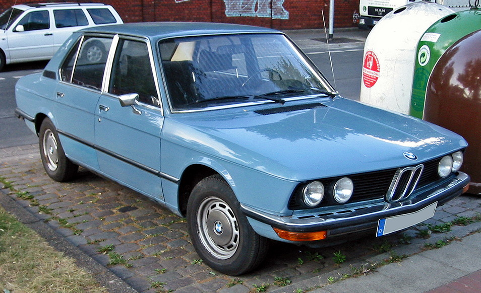
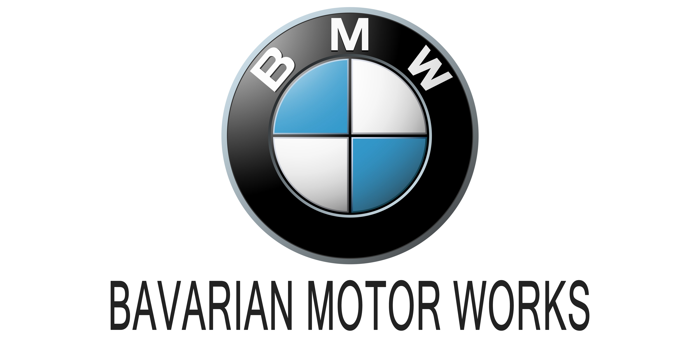

Bayerische Motoren Werke AG, commonly abbreviated to BMW (German pronunciation: [ˌbeːʔɛmˈveː] ⓘ), is a German multinational manufacturer of luxury vehicles and motorcycles headquartered in Munich, Bavaria, Germany. The company was founded in 1916 as a manufacturer of aircraft engines, which it produced from 1917 to 1918 and again from 1933 to 1945 creating engines for aircraft that were used in the Second World War. Automobiles are marketed under the brands BMW, Mini and Rolls-Royce, and motorcycles are marketed under the brand BMW Motorrad. In 2023, BMW was the world's ninth-largest producer of motor vehicles, with 2,555,341 vehicles produced[3] and in 2022 the 7th largest by revenue.[4] In 2023, the company was ranked 46th in the Forbes Global 2000.[5] The company has significant motor-sport history, especially in touring cars, sports cars, and the Isle of Man TT. BMW is headquartered in Munich and produces motor vehicles in Germany, Brazil, China, India, Mexico, the Netherlands (ceased in 2023),[6] South Africa, the United Kingdom, and the United States. The Quandt family [de] is a long-term shareholder of the company, following investments by the brothers Herbert and Harald Quandt in 1959 that saved BMW from bankruptcy, with the remaining shares owned by the public
The Otto Flugmaschinenfabrik was founded in 1910 by Gustav Otto in the Kingdom of Bavaria, which was a state of the German Empire. The firm was reorganized on 7 March 1916 into Bayerische Flugzeugwerke AG. This company was then renamed to Bayerische Motoren Werke (BMW) in 1922. However, the name BMW dates back to 1913, when a company to use the name was founded by Karl Rapp initially as Rapp Motorenwerke. The name and Rapp Motorenwerke's engine-production assets were transferred to Bayerische Flugzeugwerke in 1922, who adopted the name the same year.[7] BMW's first product was produced for fighter aircraft of the Luftstreitkräfte. It was a straight-six aircraft engine called the BMW IIIa, designed in the spring of 1917 by engineer Max Friz. Following the end of World War I, BMW remained in business by producing motorcycle engines, agricultural equipment, household items, and railway brakes. The company produced its first motorcycle, the BMW R 32, in 1923. BMW became an automobile manufacturer in 1928 when it purchased Fahrzeugfabrik Eisenach, which, at the time, built the Austin 7 under licence from Dixi.[8] The first car sold as a BMW was a rebadged BMW Dixi called the BMW 3/15, following BMW's acquisition of the car manufacturer Automobilwerk Eisenach. Throughout the 1930s, BMW expanded its range into sports cars and larger luxury cars. Aircraft engines, motorcycles, and automobiles would be BMW's main products until World War II. During the war, BMW concentrated on the BMW 801 aircraft engine using as many as 40,000 slave laborers.[9] These consisted primarily of prisoners from Nazi concentration camps, most prominently Dachau. Motorcycles remained as a side-line and automobile manufacture ceased altogether. BMW's factories were heavily bombed during the war and its remaining West German facilities were banned from producing motor vehicles or aircraft after the war. Again, the company survived by making pots, pans, and bicycles. In 1948, BMW restarted motorcycle production. BMW resumed car production in Bavaria in 1952 with the BMW 501 luxury saloon. The range of cars was expanded in 1955, through the production of the cheaper Isetta microcar under licence. Slow sales of luxury cars and small profit margins from microcars, meant BMW was in serious financial trouble and in 1959 the company was nearly taken over by rival Daimler-Benz.[citation needed] A large investment in BMW by Herbert Quandt and Harald Quandt resulted in the company surviving as a separate entity. Günther Quandt, was a well-known German industrialist, joined the Nazi party in 1933 and made a fortune arming the German Wehrmacht, manufacturing weapons and batteries.[10] Many of his enterprises were appropriated from Jewish owners under duress with minimal compensation. At least three of his enterprises made extensive use of slave laborers, as many as 50,000 in all.[11] One of his battery factories had its own on-site concentration camp, complete with gallows. Life expectancy for laborers was six months.[11][12] While Quandt and BMW were not directly connected during the war, funds amassed in the Nazi era by his father allowed Herbert Quandt to buy BMW.[9]
 First Gen 7 evolutionBMWv is an abbreviation for Bayerische Motoren Werke (German pronunciation: [ˈbaɪ̯ʁɪʃə mɔˈtʰɔʁn̩
ˈvɛɐ̯kə]). This name is grammatically incorrect (in German, compound words must not contain spaces), which
is why the grammatically correct form of the name, Bayerische Motorenwerke (German pronunciation: [ˈbaɪ̯ʁɪʃə
mɔˈtʰɔʁn̩vɛɐ̯kə] ⓘ) has been used in several publications and advertisements in the past.[20][21] Bayerische
Motorenwerke translates into English as Bavarian Motor Works.[22] The suffix AG, short for
Aktiengesellschaft, signifies an incorporated entity owned by shareholders, thus akin to "Inc." (US) or PLC,
"Public Limited Company" (UK).
The terms Beemer, Bimmer and Bee-em are sometimes used as slang for BMW in the English language[23][24] and
are sometimes used interchangeably for cars and motorcycles.[25][26][27]
The circular blue and white BMW logo or roundel evolved from the circular Rapp Motorenwerke
company logo, which featured a black ring bearing the company name surrounding the company
logo,[28] an image of a horse head on a plinth. BMW retained Rapp's black ring inscribed with the
company name, but the interior of the ring is quartered blue and white, reminiscent of the coat of arms
and flag of Bavaria (which in turn are based on the arms of the historic House of Wittelsbach, which
ruled Bavaria for many centuries).[28] The logo does not bear the distinctive lozenge shape found on the
coat of arms, however, as local laws at the time it was introduced forbade the use of state coats of
arms on commercial logos.[29]
A persistent myth claims that the logo is based on the image of an airplane propeller spinning in a blue
sky. This myth likely stems from a 1929 BMW advertisement that depicted the logo superimposed on a
rotating propeller. However, the logo predates that advertisement by 12 years.[28][30]
The current iteration of the logo was introduced in 2020,[31] removing 3D effects that had been used in
previous renderings of the logo while removing the black outline encircling the rondel. The logo is used
for BMW's branding communications but it is not used on vehicles.[32][33] The E34 generation marked the first time all-wheel drive was incorporated into the 5 Series with
the 525iX, and the first V8 engine to be used in a 5 Series. The E34 also saw the introduction of
stability control (ASC), traction control (ASC+T), a 6-speed manual transmission and adjustable damping
(EDC) to the 5 Series range. There was an unusually large range of engines fitted over its lifetime as
nine different engine families were used. These consisted of straight-four, straight-six and V8 engines.
Development ran from July 1981 to early 1987, with the initial design proposal penned by Ercole Spada in
1982.[3] Under the guidance of chief designer Claus Luthe, BMW based much of the design on the E32 7
Series. Following Spada's departure from BMW and styling approval in 1983, J Mays finalized the design
for production in mid-1985. Special attention was paid to aerodynamics, with the E34 basic saloon having
a drag coefficient of 0.30.[4] When you think about E34 then we emphasize its voice, beauty and conformity, but we never forget what
kind of people this legendary car was in the hands of it. Such cars were chosen by similar legends
because perhaps they deserved it, and this was naturally due to their talents. Let's take two people who
wrote the history of this car as Street Drift, Tevzadze (OOM-500) and Tolorava (TOL-600). These people
on the street were able to do what others couldn't do. That's why people remember the car E34 on their
faces. Car legend, legend of drivers.

Logo
Best One yet
Bmw E34
E34 M5 interior